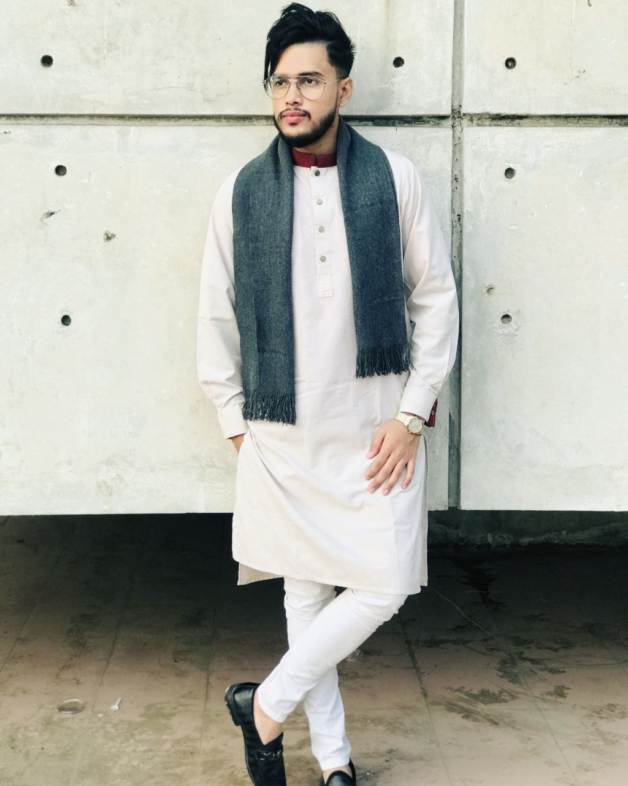

Walid Khan, [2/10/2023 10:33 PM]
Walid, [2/10/2023 10:02 PM]
Carriculum Vitae
Walid Hassan Khan
Student Of Daffodil International University
Address-Mirpur 1, Dhaka 1216
Email:Khan15-4275@diu.edu.bd
Visit Google Site

CAREER OBJECTIVE
Want to become a successful web developer in IT sector with all the effort that can be given.
JOB EXPERIENCE
Worked as a teacher in basic coaching".
SKILL
- Web developement(html,css)
- C programming(Complete a project with c programming.Project was "Railway Reservation System".Using the feature File,Switch ase. if else, for etc.)
- Java(Object Oriented Languague)(complete another project with that languague named "Online Doctor")
- Google from,google doc file,google site
ACADEMIC QUALIFICATION
Education Qualification
| Degree |
Year |
Institution |
Result |
| B.sc in CSE |
2023 in 5th semester |
Daffodil International University |
3.50 |
| HSC |
2020 |
Mohammadpur GVT.College |
5.00 |
| SSC |
2018 |
Monipur High School & College |
5.00 |
| JSC |
2015 |
Monipur High School & College |
5.00 |
EXTRA CURRICULUM ACTIVITIES
- Got medal in a cricket match in Monipur High School.
- Got an award for painting for charukola.
Walid Khan, [2/10/2023 10:33 PM]
walid, [2/10/2023 10:02 PM]
- Worked as a volunteer in 2nd ICT carnival in 2019.
- Take partivipation in DIU CSE Inter Department Programming Contest.
- Joined in Volunteer Service Club of Daffodil International University.
LINGUISTIC PROFICIENCY
- English: Efficiency in reading, Writting, speaking and Listening.
- Bangla: Efficiency in reading, Writting, speaking and Listening.
- Hindi: Efficiency in speaking and Listening.
- Tamil: Efficiency in speaking and Listening.
- Germany: Efficiency in speaking and Listening.
PERSONAL INFORMATION
- Father's Name: M.Hassan Khan
- Mother's Name: Rokeya Begum
- Date of Birth: 01-07-2001
- Nationality: Bangladeshi
- Religion: Islam
- Marital Status: Single
- Permanent Address: District-Dhaka Mirpur 1 1216
- present Address: 48, Harirampur Dhaka Mirpur 1 1216
INTEREST
- Play with Guiter
- Singing
- Travelling
- Make a good communication with good peoples
- Painting
REFERENCE
Professor Dr. Touhid Bhuiyan
Head of the Dept. of DIU
Daffodil International International University.
Email:headcse@daffodilvarsity.edu.bd